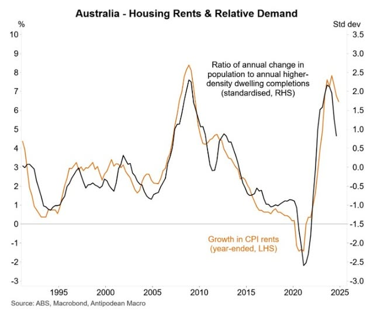

This is becoming a series. The point is that public figures now routinely refuse to engage with counter-arguments. I have another one not yet written about Nobel Laureate Brian Schmidt who did not respond to three polite emails from me. The latest intellectual coward is Liz Allen, who is the go to pro-population growth demographer with media training (taking over from Peter MacDonald).
She wrote an article on The Conversation earlier this year. Have a read of it now else my commentary below will not make any sense. I came across it in May and sent her an email on July 8. The entire email is below. I have had no reply. After a whole month, I think I can safely assume that I will not receive one.
What does it say about someone who will not defend their position or acknowledge other frameworks? When people send me critical emails in my field of expertise (i.e. my research area) which happens every year or so, I always respond. Always. I just cannot resist.
FYI, I sent a direct email to the this aspiring academic that I have published my assessment of her pitiful lack of response.
Dear Dr. Allen,
I refer to your article in the conversation, which I recently encountered. With the greatest respect, I found it very one-sided and have quoted your article with critical commentary below. I think population growth is way too high and this does not indicate a hidden agenda on my part or on the part of others who draw attention to it. More importantly, I think the discussion seems bedevilled by unnecessary culture war acrimony.
“A sensible approach to population and immigration is needed to ensure living standards don’t go backwards.” Yes, everyone agrees. Is the current policy sensible or driven by vested interests? Is more population always better? Is our current growth optimal? Sorry for the rhetorical questions. But your article seems to avoid these key points.
“Migrants help us weather the demographic headwinds.” Well, only a little. I wrote an article for TC here (based on my published research though I am not primarily a demographer). It helps slightly but not all that much, much less so if migrants bring their parents over under family reunion. The momentum of falling TFR is just too irresistible. The age dependency ratio, variously defined, will increase no matter what. We cannot get back to the population pyramid of the 1980s, without going back to a TFR=3.5 for a couple of generations. Which is not only impossible but would be a disaster, I am sure you agree. Demographic aging must be managed, not avoided. For instance, we could all work to 71 instead of 67. Not what I personally planned for but not a national disaster either. But there are the other issues of congestion and the massive cost of extending infrastructure. Let’s have the discussion of how to adjust, but it seems to me you did not. You just seemed to argue that more migrants is the only rational response to local population aging.
It beggars belief that housing affordability is unrelated to our population increase. Yes, capital prices went up during Covid when there was zero migration, which appears to be an empirical counter-example, but that is because of all the free money that was pumped into our wallets. On the other hand, rental costs went down and only went up again when NOM spiked (see attached graphic). We were also told that zero immigration would destroy the economy and it did not (not that I want zero immigration), again because of all the free money.

Seriously, how can an increase of 146,000 in Melbourne’s population in 2023-4 not increase rents? Making this point is not “political mastery” as you term it. Let’s not impugn the motives of those who make a coherent vanilla economic case that demand in an environment of restricted supply matters. No complaints from this lucky boomer though. I happen to have THREE rental properties in Melbourne! $$$!!!
It is estimated that total infrastructure (roads, public transport, schools, universities, courts, defence, hospitals, airports, water, dams, pumped hydro, Snowy 2.0, gas and coal power plants, renewable energy) is worth 4.5 trillion dollars, which is just over two years GDP. Does it not follow then that a 1% increase in population requires (at some point) an extra 2% GDP? Currently we have more than 1% growth each and every year. We barely average 2% (real) GDP growth per year. So basically, all of it is taken up with the infrastructure costs of more than 1% population growth. Victoria is currently bankrupting itself building massive public transport infrastructure for the extra 2 million people that were not in Melbourne 25 years ago. Migrants are not to “blame” for this. It is a consequence of our own misguided, developer friendly, lobbyist driven, Ponzi-policy.
And lastly, Australia’s population growth over recent past years is higher than any other developed country. By a large margin. Am I wrong? If not, why so high? Is the rest of the world getting it wrong?
Most of our population growth is immigration driven, a point you make yourself. This is actually good, since we can adjust our population growth to exactly what we want. We have a dial we can turn up or down at will. It has been turned up and up in recent times, not only the last 2 years but the last 20. What is the downside of turning it down in experimental steps? If the economy reacts badly, we could quickly pause or even reverse and get back to the previous trajectory as quickly as we like. Whereas, increased immigration is almost impossible to reverse. The risk/costs of policy change are asymmetric. My contention is that: there is no downside risk to trying a lower immigration policy. I suspect that those against fear it might work.
Why did you not include any of these discussion points, even if you have counterarguments and ultimately come to the conclusion that …. What was your conclusion? What population growth should we have? Referring to your last sentence, I have no idea what “harness the power of demography” means.
Sincerely
Chris J. Lloyd
Yoo Hoo. Liz …?
Both Liz and Peter MacDonald are demographers with almost no knowledge of economics. It is atrocious since they jointly drive much official immigration thinking in Australia. They don't believe in labour markets and relative wages adjusting to correct imbalances but instead see selective immigration intakes as an essential means of eliminating excess demands for labour.
When about 60% of new housing demands arise from immigration it is utterly implausible to argue immigration does not drive house prices and rentals.
Extra infrastructure costs dominate any "gains-from-trade" benefits from immigration. So too do congestion costs in our major cities.
They also dispute claims that labor demand curves slope downwards so that extra migrants put a cap on wage growth. It always surprises me that the Labor Party which is supposed to be interested in workers is so keen on depressing wages and shifting higher returns to owners of fixed assets such as owners of land and housing. Yes, property owners such as yourself get capital gains on their properties from immigration as the functional distribution of income turns against Labor.
They will not debate you because they cannot. They are wrong and their phoney non-economics based theories do damage to Australia.
Ah perfect example of ‘your not from my silo’ f off
I'll add a gratuitous link to my Troppo piece examining what we can extract as broadly established facts about immigration's connection with housing prices:
https://clubtroppo.com.au/2025/04/21/immigration-cuts-and-housing-prices-what-research-says-and-media-should-report/
Key points:
Note that none of this answers the question; it just seeks to establish some baseline facts on the basis of which sensible arguments can be made.
Yes, I certainly did read you previous post and commented on it.
I despair that serious academics would actually think that immigration could not have SOME upward pressure on housing costs. The questions is how large. The problem is that immigration levels are so endogenous that causality is confused. But the fact that lobbyists argue that cutting immigration would lead to a collapse of housing prices kind of gives the game away.
I think my last point is the strongest. Why not EXPERIMENT with cutting immigration by 50,000 every year to see the effects? Easily reversible. I note that you rather agreed with me. I tried to get the Sustainable Australia Party to consider this as an alternative so slashing immigration to a completely arbitrary 50,000 but they .... stopped talking to me! Seriously. I tried to get it discussed at an AGM and was shut down. When I tried to raise it in their FB site, I was banned from the party. Perhaps this is my next boring post!
There is a great comedy routine in your last dot-point. We have been told for 20 years that we need to import more (construction, garbage, retails, medical specialty, name your industry) workers to fill our labour shortages. I do not need to explain to you that immigrants need these same services. They shortages remain. Don't take my word for it though. They are still making the same argument! I guess Liz would say immigration should have been even higher in the past and we would have covered it.
Not convinced of your third dot-point. Productivity has languished for decades and Ross Gittins (usually a lefty) argued last year that immigration makes Australian business lazy and reduces the necessity to innovate.
BTW: regarding returning to "normal" immigration, the link you provided in the earlier post is Liz Allen's mentor: Democracy Sausage: Population panic. Why is his group called the "migration hub" rather than the "Optimum Population Hub"?
What a garbage response. Totally unjustified and wrong.
Is this comment directed at Harry or Liz?
John. Its a quip that expresses about as much on immigration as his earlier post. Get serious and informed or leave it alone. I shouldn't get annoyed but it ignores what I said in my comment and just tries to be a smart-arsed. John: Contribute or shut up.
Sorry
Harry
Quick explanation
It to an outsider looks like a ‘ I’m a expert demographer’ and all things population are my remit
In contrast you are ‘an expert economist ‘ and therefore not qualified to speak on all things relating to ,population
Anyway happy to leave it at that
It was written after I read Liz
She just had a miscarriage and has been in the middle of a firestorm related to university cutbacks and corruption, where she spoke up.
Have a heart.
Well I didn't get an out of office.
Turns out Liz Allen is at the centre of the news for quite different reasons.
https://www.theguardian.com/australia-news/2025/aug/12/academic-labels-julie-bishop-hostile-and-arrogant-at-inquiry-into-leadership-issues-at-anu-ntwnfb
I have made the point many times before. The notion that female leaders are less psychopathic than male leaders misses the dynamics of competition for power.
Harry I was quite serious ( and meant no offence to you at all) It was no quip If you can’t see the silo walls ( of others or of your self )it’s not my fault